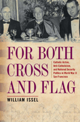

Against a backdrop of war and anti-Catholic sentiment, one man loses his rights because he is falsely accused
Against a backdrop of war and anti-Catholic sentiment, one man loses his rights because he is falsely accused


 Against a backdrop of war and anti-Catholic sentiment, one man loses his rights because he is falsely accused
Against a backdrop of war and anti-Catholic sentiment, one man loses his rights because he is falsely accused

|  |
For Both Cross and FlagCatholic Action, Anti-Catholicism, and National Security Politics in World War II San FranciscoWilliam Isselcloth EAN: 978-1-43990-028-4 (ISBN: 1-4399-0028-0) |
"For Both Cross and Flag breaks interesting new ground. Issel, a leading specialist on the history of 20th century San Francisco, has done an exhaustive job of researching the life and career of Sylvester Andriano. He fills out the history of conservatism in the United States and the role of religion in local and national politics. Thoroughly researched and clearly written, this excellent historical work fits very nicely at the intersection of urban history, political history, and ethnic history. It also makes important moral points."
—Carl Abbott, Portland State University
In this fascinating history set before and during World War II, William Issel recounts the civil rights abuses suffered by Sylvester Andriano, an Italian American Catholic whose religious and political activism in San Francisco provoked an Anti-Catholic campaign against him. A leading figure in the Catholic Action movement, Andriano was falsely accused in state and federal Un-American Activities Committee hearings of having Fascist sympathies. As his ordeal began, Andriano was subjected to a hostile investigation by the FBI, whose confidential informants were his political rivals. Ultimately, the U.S. Army ordered him to be relocated on the grounds that he was a security risk.
For Both Cross and Flag provides a dramatic account of what can happen when parties to urban political rivalries, rooted in religious and ideological differences, seize the opportunity provided by a wartime national security emergency to demonize their enemy as �a potentially dangerous person.�
Issel presents a cast of characters that includes archbishops, radicals, the Kremlin, and J. Edgar Hoover, to examine the significant role faith-based political activism played in the political culture that violated Andriano's constitutional rights. Exploring the ramifications of this story, For Both Cross and Flag presents interesting implications for contemporary events and issues relating to urban politics, ethnic groups, and religion in a time of war.
Excerpt available at www.temple.edu/tempress
"Sylvester Adriano�s story needs to be told and Issel does a service to American history in writing For Both Cross and Flag. He deals with a neglected aspect of American politics in World War II, and makes a serious contribution to the study of anti-Catholicism in the (Western) United States. In the hysteria of our post-911 world, Issel�s book has a clear immediacy. For Both Cross and Flag fits in perfectly to discussions of religion, anti-Catholicism and secularization"
—Roy Domenico, University of Scranton
"Issel's splendid book... is a sad and tragic tale.... His account of Sylvester Andriano also illustrates the wisdom of the Greek tragedian Aeschylus, who said, 'In war the first casualty is truth.'"
—The Institute for Historical Study Newsletter
"Highly engaging and thoroughly researched, this [book] aptly demonstrates how international and national events impinged on domestic security issues on a local level, using Italian-American Sylvester Andriano as a test case. The book makes a significant contribution to the literature as a local history with national implications.... Issel weaves an extremely engaging story that is told with great passion."
—American Catholic Studies
"The description of the internal battles among San Francisco's Italians provides an interesting case study of how the political and social battles that had raged in Italy for several generations took root on American soil. Issel has added another installment to the sad wartime hysteria that sent thousands of innocent and loyal Californians into exile for what would today be termed 'racial profiling.'"
—California History
"William Issel�s For Both Cross and Flag is a welcome addition to the growing literature on American Catholicism during World War II. While many scholars have examined the tension between Catholics and Protestants before, Issel�s thoughtful and workmanlike examination of the experiences of Sylvester Andriano, a Catholic attorney in San Francisco, is a much-needed local study that raises many provocative questions.... [It] is an excellent book that contributes a new and unique perspective to our understanding of the history of twentieth-century urban Catholicism."
—H-Net's H-California
"Most of Issel's tale is a description of the growth of Catholic Action... For its careful scholarship and well considered argument, this little book is warmly recommended to all academic libraries."
— Catholic Library World
"Issel's work is instructive, compelling, and valuable... For Both Cross and Flag ought to count as the first meaningful and pace-setting step in recounting the history of Catholic Action in the United States. What is praiseworthy about Issel's treatment is that he eschews the proclivity to write functional organizational history. Instead, the author provides contextualization for a regional history of Catholic Action which will set the tone for how future historians will write about the movement.... [A] pathbreaking book for scholars interested in twentieth-century Catholic history in general, and American anti-Catholicism in particular.... In a concise, highly-readable book, Issel underscores the vibrancy of San Francisco Catholic culture."
— The U.S. Catholic Historian
"Issel, a specialist in the political, social, and cultural history of twentieth-century America, cover new territory in this excellent study.... For Both Cross and Flag is illuminating on several counts.... Well researched and persuasively argued, this slim book is also relevant. Although the tragedy of Sylvester Andriano has slipped down the memory hole, its recounting reminds us of the effect of loyalty investigations on civil liberties in wartime. If some measure of the worthiness of a book is that it teaches us things we ought to remember, this is indeed a fine book."
— Western Historical Quarterly
"Beginning with the introduction, which presents an overview of the case, Issel skillfully guides the reader through the layers of Andriano�s story and presents his central point: that anti-Catholicism played a key role in the decision of the Communist Party and anti-Catholic fellow Italian immigrants to target him.... Issel has told a story whose importance lies in its cautionary nature and its reminder regarding the influence of immigrants� homeland politics and religious affiliation in domestic politics."
—Catholic Historical Review
"It is Issel�s description of the process of Catholic Action becoming something 'concrete' in the San Francisco area during the 1930s and 1940s that gives value to this book.... Carefully and methodically, Issel shows how Catholic leaders�including [Sylvester] Andriano, but also Archbishops Edward Hanna and John Mitty along with Mayor Angelo Rossi�worked to secure a just resolution of worker demands because they saw those demands as legitimate given Catholic teaching.... [T]here is no denying that his book, in its details, brings to life a period in which San Francisco�s Catholics, and the Catholic Church in San Francisco, faced a set of circumstances, locally and globally, dramatically different from what is currently the case. Many readers...will enjoy the book for this reason alone."
—Italian American Review
"Issel effectively portrays divisions in an Italian American community that ranged from nuns and anarchists, underscores the Roosevelt administration's mixed record on civil liberties, and documents J. Edgar Hoover's disposition to ignore exculpatory evidence in his search for subversives."
— Pacific Historical Review
Also available in e-book
Acknowledgments
Introduction
1. Sylvester Andriano, a Catholic Attorney in San Francisco
2. Anti-Catholicism in Little Italy
3. Catholic Action, from Rome to San Francisco
4. Catholic Action Theory and Practice in
San Francisco
5. Sylvester Andriano and Catholic Action in San Francisco
6. The Catholic Action Social Apostolate
7. The Catholic Action Educational and Moral Apostolates
8. Catholic Action and Communism
9. Catholic Action, European Crises, and
San Francisco Politics
10. Andriano�s Ordeal: The Loyalty Hearings
11. Andriano�s Ordeal: Exclusion and Exile
Epilogue
Notes
Index
 | William Issel is Professor of History Emeritus at San Francisco State University and Visiting Professor of History at Mills College. He is the author of Social Change in the United States 1945-1983, coauthor of San Francisco, 1865-1932: Politics, Power, and Urban Development, and co-editor and contributor to American Labor and the Cold War: Grassroots Politics and Postwar Political Culture. |
American Studies
Urban Studies
Religion
Urban Life, Landscape, and Policy, edited by Zane L. Miller, David Stradling, and Larry Bennett.
Urban Life, Landscape, and Policy Series, edited by Zane L. Miller, David Stradling, and Larry Bennett, features books that examine past and contemporary cities, focusing on cultural and social issues. The editors seek proposals that analyze processes of urban change relevant to the future of cities and their metropolitan regions, and that examine urban and regional planning, environmental issues, and urban policy studies, thus contributing to ongoing debates.
© 2015 Temple University. All Rights Reserved. This page: http://www.temple.edu/tempress/titles/2034_reg.html.